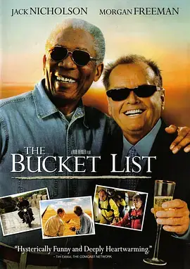
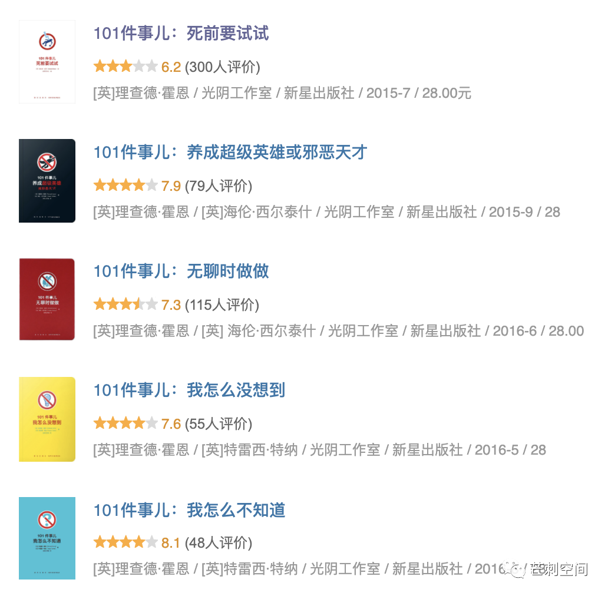

这本来是一篇书评，完全歪楼了。如果有谁想看文末的《101件事儿，死前要试试》，可以在 2020年10月6日晚22:00前联系我。我送给你，包邮。
两年前，我启动了一个 personal project：第一千零一种生活。没错，就是模仿了一千零一夜。目的很简单，推动自己去做更多的尝试，寻找改变的可能性。
死生亦大矣
世界纷扰，可以做的事情那么多，想做的事情也不少，应该如何选？特别是在年纪尚轻，充满好奇的年纪里，事情多得像荷塘飞柳，千头万绪。（一个谐音梗送给大家）
小孩子才做选择，成年人全 pai 部 you 都 xian 要 ji。
于是，我拿出古早味 to-do-list，上面写满了未竟之事。毕竟 to-do 的近义词是 never-done。为了打破一直无法做完的颓势，我先后设立了两个 personal project，遗愿清单 和 第一千零一种生活。一个是终局，一个是中局。一个解决怎么死的问题，一个解决怎么活的问题。
关于遗愿清单，可参考电影 The Bucket List。

让改变一件件地发生
作出改变需要几步？三步：
- 想明白要改变什么，准确地写下来。
- DO IT！
- 等待改变发生。
你笑了。你肯定笑了：哪有那么简单！的确没那么简单，但我们可以降低改变的门槛。一场巨大的变革，必然是诸事繁杂，兼头顾尾。但改变，却可以很小，很细微。小到，出门前多看一眼镜子（3s 钟），每工作 40 分钟站起来远眺伸展（1分钟）。想到需要去做的，需要长期坚持的事情，或者短期内持续尝试的事情，都可以纳入 1001 的体系里来。
第一千零一种生活的哲学是这样的：如果每周可以对生活做一个细微的调整，那么一年可以发生 52 种调整。哪怕成功率只有一半，留存率也只有一半，一年下来也发生了 13 种调整。假以时日，个体生活会像是忒修斯之船，完全变了模样。
这不是 1.01 ^ 100 = 2.7 的鸡汤。这也不是人生迭代法。这只是一种时刻观察自身状态、自己与外界关系的开放式心态，时刻准备作出调整的成长式心态，是积极的心理暗示。是将遥远目标拉到近日的筹谋，是将千头万绪逐个击破的疲倦无奈，是对好奇心的满足。这是在最困顿时期里顽强的坚守：我还在推进一些事情发生，机会还没有消失。
实际操作方式
-
明确想要作出的改变，将其拆分成足够轻松容易的任务，容易到可以在十几分钟内完成，可以每日坚持完成，可以轻松地在一周内完成。这些改变应该都不是最紧急的任务，最紧急的任务应该马上去做，或者直接放弃。
-
给这些任务排出依赖关系和优先级，将重要的且最基础的事情，放在最前面。
-
先做第一个，持续一周。一周结束后自我评价效果，看是否需要再坚持一周，还是进入下一个任务，还是要调整任务。
-
注意积累每周任务带来的好处，放大地看这些好处。自我鼓励，持续改进。
也可以无厘头一些
当然，不是所有的事情都是重大的事情。就是有一些事情想要尝试呢？
那也可以简单地用这个方法来做。挑选有乐子的小事情，安排一周的事情去坚持做做看，或者那个周末去完成看看。如果你的小乐子仅仅是探店打卡拔草这种千篇一律的事情，大可不必采用这个方法。请确保你的事情，足够独特，足够对你的生活带来细微的改变。至少能够在生命中打开一个新的窗口吧。比如：尝试新的菜系是有趣的事情，尝试一家新火锅店则不是。
如果你无趣到一个点子都想不出来，那么可以试试这几本书。
